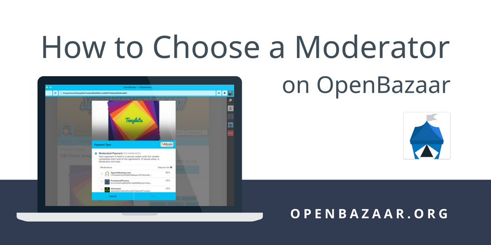

“I think of a hero as someone who understands the degree of responsibility that comes with his freedom.” - Bob Dylan (1941 - ), American Singer-Songwriter, Musician, and Poet
Everyone likes the idea of freedom, right? To do what you want when you want to is a nice concept on which most of us can agree. We also know that exercising our freedom comes with the responsibility of making good decisions. A decentralized network is a practical place to apply this dream of freedom, a place where a buyer and a seller can trade directly with one another and not have anyone else telling them what they can or can’t do. It’s a space that offers a lot of opportunity but there is also risk involved when strangers first gather together to buy and sell–and trust that outweighs or eliminates risk is necessary for building a lasting business network. How do you establish trust on a free network where people there will likely never know one another through anything other than pixels on a screen? Our solution on OpenBazaar is to introduce an objective third party on individual transactions. Presently there are two types of ways for buyers to send payment to vendors in OpenBazaar:
- Direct Payment - The buyer sends his bitcoin directly to the vendor and trusts that the vendor will then send the goods purchased.Direct payment is risky because once bitcoins are sent the payment cannot be reversed. If the vendor is dishonest they can take the payment and not send the product. We recommend that buyers only use direct payments if they completely trust the vendor and are dealing with small amounts of bitcoin.
- Moderated Payment - The buyer adds a third party to the transaction, called a moderator, to provide assistance in the case of a dispute. Moderated payments are much more secure.
Moderators and Multisig Accounts
A moderator is a type of user on the OpenBazaar network who helps offer a secure payment method called moderated payment. The buyer adds a moderator and then pays their Bitcoins into a sort of escrow address, called a multisignature or “multisig” address, which is then jointly controlled by the buyer, the vendor, and the moderator. In order for the funds to leave the multisig, any two of these parties need to agree how to release the funds. (Read more about how multisig accounts work here: Can Bitcoin and Multisig Reduce Identity Theft and Fraud?) In most cases a transaction will go through smoothly, the buyer and vendor are both happy, and they agree to release the funds. In that case the moderator isn’t even aware they were chosen to provide escrow and they don’t receive a fee. If the transaction doesn’t go smoothly and the buyer or seller open a dispute, then the moderator will provide resolution. The moderator will determine which party is at fault, and will then join with the winning party to release the funds (either release payment to the vendor or refund the buyer). In return for offering this service, the moderator will receive a percentage of the transaction called a dispute fee. These fees are displayed when selecting a moderator and can be viewed by visiting the moderator’s page as well.
Choosing a Moderator
It’s very important for the buyer to select a trustworthy moderator for this arrangement to work. If a moderator is dishonest he can join with the other party to release funds regardless of the situation. If a moderator is unresponsive then a buyer and seller can be locked in a disagreement with no way out. Currently anyone can become a moderator on the OpenBazaar network and we would like to provide some advice on how to select someone trustworthy!
Scope them out in advance
Check out their profiles and look for these 2 things in particular:
- A posted moderator agreement
- An email address
And it’s also very helpful if they are active in our Slack. The best way to find that out now is to join Slack and ask around or ask them directly.
Make contact
Using the contact information available in the index, reach out to a moderator to gauge their responsiveness and ask them a few questions! We recommend:
- Why have you chosen to be a moderator on OpenBazaar?
- How many disputes have you settled? Can you tell me about some of them?
- Are you in the OpenBazaar Slack? What is your username?
Start small
This environment is still very grassroots so start building relationships here the same way you would online. If you are still wary, start with just a small purchase to try them & the vendor out to minimize your risk. If all goes well then continue on with your adventures and let others know; word of mouth referrals are an excellent way to help others build their reputation and move around confidently in the marketplace!
Want to get to know some people and do some stuff? Join us on Slack, Github and Twitter! Would you like to shop or sell on OpenBazaar? It’s easy and completely free to start as a buyer or vendor! Download now at OpenBazaar.org \
Do you want to help build this with us?
Download OpenBazaar right now to start buying or selling in minutes or just see what's for sale at OpenBazaar.com.
Developers, join us on Github to contribute to this open-source project!